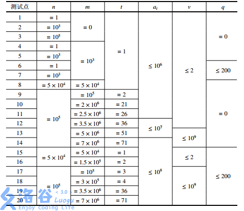

题目描述
蛐蛐国最近蚯蚓成灾了！隔壁跳蚤国的跳蚤也拿蚯蚓们没办法，蛐蛐国王只好去请神刀手来帮他们消灭蚯蚓。
本题中，我们将用符号 ⌊c⌋ 表示对 c 向下取整，例如：⌊3.0⌋=⌊3.1⌋=⌊3.9⌋=3。
蛐蛐国里现在共有 n 只蚯蚓（n 为正整数）。每只蚯蚓拥有长度，我们设第 i 只蚯蚓的长度为 ai（i=1,2,…,n），并保证所有的长度都是非负整数（即：可能存在长度为 0 的蚯蚓）。
每一秒，神刀手会在所有的蚯蚓中，准确地找到最长的那一只（如有多个则任选一个）将其切成两半。神刀手切开蚯蚓的位置由常数 p（是满足 0<p<1 的有理数）决定，设这只蚯蚓长度为 x，神刀手会将其切成两只长度分别为 ⌊px⌋ 和 x−⌊px⌋ 的蚯蚓。特殊地，如果这两个数的其中一个等于 0，则这个长度为 0 的蚯蚓也会被保留。此外，除了刚刚产生的两只新蚯蚓，其余蚯蚓的长度都会增加 q（是一个非负整常数）。
蛐蛐国王知道这样不是长久之计，因为蚯蚓不仅会越来越多，还会越来越长。蛐蛐国王决定求助于一位有着洪荒之力的神秘人物，但是救兵还需要 m 秒才能到来 ……（m 为非负整数）
蛐蛐国王希望知道这 m 秒内的战况。具体来说，他希望知道：
- m 秒内，每一秒被切断的蚯蚓被切断前的长度（有 m 个数）；
- m 秒后，所有蚯蚓的长度（有 n+m 个数）。
蛐蛐国王当然知道怎么做啦！但是他想考考你 ……
输入格式
第一行包含六个整数 n，m，q，u，v，t，其中：n，m，q 的意义见「问题描述」；u，v，t 均为正整数，你需要自己计算 p=vu（保证 0<u<v）；t 是输出参数，其含义将会在「输出格式」中解释。
第二行包含 n 个非负整数，为 a1,a2,…,an，即初始时 n 只蚯蚓的长度。
同一行中相邻的两个数之间，恰好用一个空格隔开。
保证 1≤n≤105，0<m<7×106，0<u<v<109，0≤q≤200，1<t<71，0<ai<108。
输出格式
第一行输出 ⌊tm⌋ 个整数，按时间顺序，依次输出第 t 秒，第 2t 秒，第 3t 秒 …… 被切断蚯蚓（在被切断前）的长度。
第二行输出 ⌊t(n+m)⌋ 个整数，输出 m 秒后蚯蚓的长度；需要按从大到小的顺序，依次输出排名第 t，第 2t，第 3t …… 的长度。
同一行中相邻的两个数之间，恰好用一个空格隔开。即使某一行没有任何数需要输出，你也应输出一个空行。
请阅读样例来更好地理解这个格式。
3 7 1 1 3 1
3 3 2
3 4 4 4 5 5 6
6 6 6 5 5 4 4 3 2 2
样例说明 1
在神刀手到来前：3 只蚯蚓的长度为 3,3,2。
1 秒后：一只长度为 3 的蚯蚓被切成了两只长度分别为 1 和 2 的蚯蚓，其余蚯蚓的长度增加了 1。最终 4 只蚯蚓的长度分别为 (1,2),4,3。括号表示这个位置刚刚有一只蚯蚓被切断；
2 秒后：一只长度为 4 的蚯蚓被切成了 1 和 3。5 只蚯蚓的长度分别为：2,3,(1,3),4；
3 秒后：一只长度为 4 的蚯蚓被切断。6 只蚯蚓的长度分别为：3,4,2,4,(1,3)；
4 秒后：一只长度为 4 的蚯蚓被切断。7 只蚯蚓的长度分别为：4,(1,3),3,5,2,4；
5 秒后：一只长度为 5 的蚯蚓被切断。8 只蚯蚓的长度分别为：5,2,4,4,(1,4),3,5；
6 秒后：一只长度为 5 的蚯蚓被切断。9 只蚯蚓的长度分别为：(1,4),3,5,5,2,5,4,6；
7 秒后：一只长度为 6 的蚯蚓被切断。10 只蚯蚓的长度分别为：2,5,4,6,6,3,6,5,(2,4)。
所以，7 秒内被切断的蚯蚓的长度依次为 3,4,4,4,5,5,6。7 秒后，所有蚯蚓长度从大到小排序为 6,6,6,5,5,4,4,3,2,2。
3 7 1 1 3 2
3 3 2
4 4 5
6 5 4 3 2
样例说明 2
这个数据中只有 t=2 与上个数据不同。只需在每行都改为每两个数输出一个数即可。
虽然第一行最后有一个 6 没有被输出，但是第二行仍然要重新从第二个数再开始输出。
3 7 1 1 3 9
3 3 2
2
样例说明 3
这个数据中只有 t=9 与上个数据不同。
注意第一行没有数要输出，但也要输出一个空行。
数据范围与提示
对于 100% 的数据，1≤n≤105，0≤m≤7×106，1≤t≤71，0≤ai≤108，1≤v≤109，0≤q≤200。
